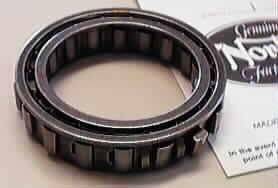

Backfire during start-up can destroy the sprag clutch. To avoid this problem, check the following:
- Some ignitions need 12v or can cause backfiring. Verify the battery is the correct specification (YB12AA), is fully charged, and in good condition.
- Ignition timing not set properly can cause backfiring. Make sure your ignition timing is set according to the factory manual or the ignition timing specifications.
- When replacing the sprag clutch, you need to make sure the bearing race in the drive sprocket (06-4681) and the bearing race on the crank gear (06-4731) are not worn and are dimensionally correct. The drive sprocket I.D. should be 2.280" to 2.281" and the crank gear O.D. should be 1.6253" to 1.6248".
- There is a backfire device designed to eliminate damage to the sprag clutch if a backfire does occur. See our article on this device at Overload backfire device assembly and adjustment.
The old sprag clutch came with 14 rollers, where the new ones come with 18 rollers and since the sprag clutch is normally a trouble spot with the starter system, it is recommended you upgrade to the new sprag if you have the old sprag. For more information on the sprag clutch and how it fits into the starter assembly see our technical article: Pictorial help with installing the E-start starter gear train and setting up the backfire assembly.
This page was written and designed by F. H. Eaton & Associates if you have any questions or comments please contact us at info@fheaton.com